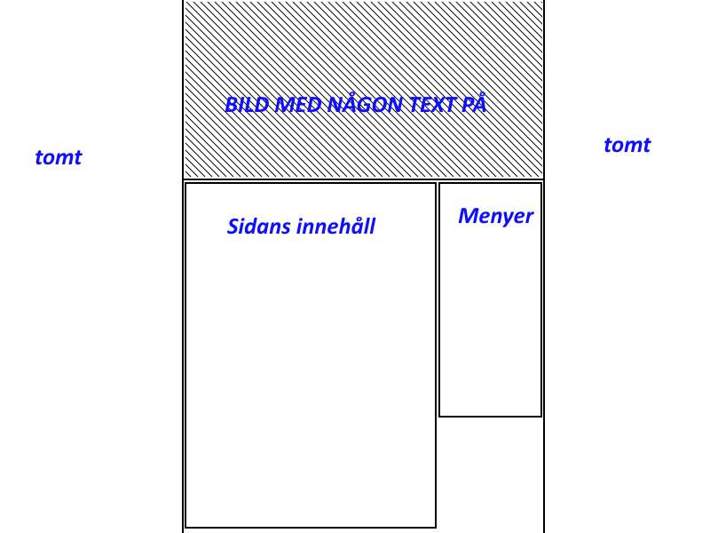

Gillar du äppelkakor?
Klicka här
Gillar du äppelkakor?
Klicka här
B_2 css
Tänkte något med temat eld, en bild som smälter in i backgrunden.
Centrerad sida med tydliga avramningar. Menyerna på höger sida med
hover effekt.Några font och färgval som passar med temat. Det ska
vara tydligt vad man klickar på, enkelt att see och läsa texten.
